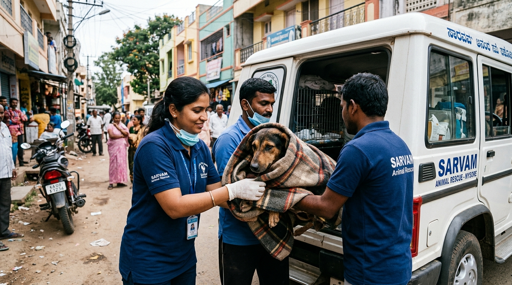

Every single day across the historic city of Mysore and its surrounding rural outskirts, hundreds of thousands of native street dogs share our roads, footpaths, bustling markets, and quiet residential layouts. While many lead peaceful lives sustained by compassionate community feeders, the daily reality of street survival is harsh and unforgiving. High-speed vehicular collisions along the Outer Ring Road, deep open construction ditches, severe territorial pack fights, and human cruelty subject innocent canines to catastrophic, life-threatening trauma.
At Dogs Protection Trust (DPT), our mission begins on the asphalt. Our 24/7 Emergency Rescue Helpline receives dozens of urgent calls and WhatsApp alerts daily from auto drivers, police constables, shopkeepers, and animal lovers. In this comprehensive master guide, we share our complete field triage standards, specialized containment techniques, and veterinary stabilization workflows that turn tragic accidents into stories of full recovery.
1. The Anatomy of a Distress Call: Rapid Triage Within 60 Seconds
When an emergency call reaches our helpline (+91-9108021554 or +91-9901035607), every second determines whether an injured dog lives or dies. An animal lying on a busy roadway is in grave danger of secondary vehicle strikes, hypovolemic shock, fatal heatstroke, or panicking into oncoming traffic.
Our emergency dispatch coordinators gather four critical pieces of information within one minute:
- Exact Geo-Coordinates & Visual Landmarks: Callers are guided to send a WhatsApp live location paired with distinctive landmarks (e.g., Near Ramkrishna Nagar Circle, opposite the primary school gate).
- Injury Assessment Profile: We request photos or short video clips to evaluate the posture—is there active arterial spurting? Are hind limbs dragging? Is the dog conscious, comatose, or seizing?
- Environmental Danger Factors: Is the dog trapped in deep traffic, stuck inside a stormwater drain, or surrounded by a hostile crowd?
- On-Site Guardian Protocol: We request the caller or a bystander to keep visual contact with the animal from a safe distance so the dog is not lost before our ambulance arrives.
2. Humane Field Containment & Safe Handling Techniques
A common mistake in animal rescue is assuming that a hurt dog instinctively knows humans are there to help. In reality, a dog in extreme pain is overwhelmed by adrenaline and fear. Their biological instinct is fight-or-flight. Even the gentlest neighborhood dog may bite instinctively if an excruciating pelvic break or exposed bone is touched.
The 4-Step Gentle Containment Protocol
- Sideways Non-Threatening Approach: Rescuers never run, shout, or stare directly into the dog's eyes. We approach sideways at a slow, deliberate pace, speaking in low, rhythmic, calming tones.
- The Rescue Blanket Wrap Method: A heavy, sterile rescue fleece is gently cast over the dog's upper body. This serves two vital functions: it covers the eyes (instantly reducing visual panic) and creates a padded barrier protecting the rescuer from defensive snaps.
- Humane Emergency Muzzling: Using a soft fabric loop or gauze strip, the snout is temporarily secured during physical lifting. (Note: Muzzles are strictly forbidden if the dog has facial fractures, vomiting, or respiratory distress).
- Rigid Spinal Board Transfer: For suspected spinal, pelvic, or femur trauma, two handlers slide a flat, rigid spine-board beneath the blanketed dog, lifting the animal horizontally without spinal flexion.
3. Mobile Ambulance Stabilization: Fighting Shock & Blood Loss
Our dedicated rescue ambulance is equipped as a mobile trauma unit. Stabilization must begin inside the vehicle before transport to the veterinary hospital:
| Trauma Condition | Immediate Field Intervention | Clinical Objective |
|---|---|---|
| Severe Hemorrhage | Sterile pressure dressings & hemostatic gauze pads | Stop acute blood loss & prevent hypovolemic collapse |
| Hypovolemic Shock | Thermal foil blankets, sublingual glucose, IV Ringer's Lactate | Restore central blood pressure & body core temperature |
| Open Bone Fractures | Betadine irrigation & padded pneumatic splinting | Prevent bone ends from puncturing nerves and muscle tissue |
| Heatstroke / Dehydration | Tepid paw cooling & slow IV electrolyte rehydration | Lower core body temperature safely without inducing shivering |
4. Comprehensive Hospital Handover & Surgical Care
Upon arrival at our partner veterinary surgical centers, the dog undergoes immediate digital radiography (X-rays), ultrasound for internal bladder/splenic rupture, and complete blood count testing (CBC). High-potency analgesia (Tramadol / Meloxicam) is administered to eliminate pain, followed by scheduled orthopedic pinning, plating, or wound debridement under general anesthesia.
5. Acute Street Poisoning & Toxic Ingestion Emergency Protocol
Accidental or malicious poisoning represents one of the most critical veterinary emergencies encountered on Mysore streets. Ingestion of rodenticides (warfarin/bromadiolone), organophosphates from agricultural runoff, or contaminated garbage containing strychnine leads to rapid neurological or hemorrhagic collapse.
The 4-Step Field Poisoning Response
- Rapid Toxin Identification: Rescuers inspect the immediate scene for colored powders, chemical packets, or vomit characteristics. Organophosphates cause characteristic SLUDGE symptoms (Salivation, Lacrimation, Urination, Defecation, Gastrointestinal distress, and Emesis) with pinpoint miosis.
- Antidote Administration: If organophosphate poisoning is diagnosed within 30 minutes, injectable Atropine Sulfate (0.04 mg/kg) is administered to reverse cholinergic crisis, followed by Pralidoxime (2-PAM).
- Gastric Decontamination & Adsorption: Activated charcoal slurry (1-2 g/kg) is administered via orogastric tube to bind remaining intestinal toxins and prevent systemic circulation.
- Intravenous Lipid Emulsion (ILE) Therapy: For fat-soluble toxins (ivermectin, permethrin), IV lipid emulsions are infused to trap the toxin in intravascular space, allowing safe renal excretion.
6. Rural Village Emergency Outreach: Extending the Safety Net
Beyond Mysore's municipal boundaries lie dozens of agrarian villages (including Varuna, Jayapura, Bannur, and Nanjangud) where private veterinary clinics are completely non-existent. When a working farm dog or stray suffers a tractor collision or barbed-wire laceration, villagers have nowhere to turn.
Our mobile rescue unit travels up to 45 kilometers outside the city center. We establish village community triage points, train local youth volunteers in basic hemorrhage control, and transport critically injured rural animals back to our Mysore sanctuary for surgical care.
🐾 Case Study: Rocky's Incredible 8-Week Highway Recovery
The Incident: Rocky, a 2-year-old native Indie dog, was hit by a speeding truck on the Mysore-Hunsur highway at 8:30 PM. He was thrown 15 feet into a ditch, suffering a compound femur fracture and fractured pelvis.
The Rescue: Our team reached the scene in 20 minutes, stabilized Rocky's shock with IV fluids, and transferred him on a rigid spine-board. Within 2 hours, he was on the surgical table undergoing titanium bone plating.
The Outcome: After 8 weeks of intensive post-operative physiotherapy, laser healing sessions, and high-protein nutrition at Dogs Protection Trust, Rocky made a 100% recovery. Today, Rocky runs effortlessly and loves greeting visitors at our shelter gates!
7. How Every Citizen Can Protect Mysore's Street Dogs
You are our eyes and ears on the ground. When you see an animal in distress, here is how you can save a life:
- Save DPT Emergency Numbers: Program +91-9108021554 and +91-9901035607 into your phone under "Animal Rescue".
- Provide Physical Protection: Park your two-wheeler or car with hazard lights on to shield the injured animal from oncoming traffic until help arrives.
- Offer Clean Drinking Water: If the dog is conscious and not vomiting, offer a shallow bowl of clean water. Never force-feed a dog in shock.
- Support DPT Rescue Operations: Fuel, vehicle maintenance, sterile gauze, splints, and emergency surgeries cost thousands of rupees daily. Your donations directly sponsor life-saving rescue runs.
Written by DPT Emergency Rescue Unit
Our dedicated emergency team operates 24/7 across Mysore city and rural districts, rescuing and rehabilitating abandoned and severely injured animals.
6. Mysore Neighborhood Rescue Hotspots & Rapid Dispatch Protocols
Over our years of active field service across Mysore, our rescue telemetry has identified critical high-density accident zones that require constant emergency readiness. Major corridors such as the Outer Ring Road near Bogadi, the high-speed stretches along Hunsur Road, Bannimantap Highway intersections, and the bustling commercial arteries of Mandi Mohalla and Devaraja Market witness frequent canine distress incidents. During peak morning and evening commuter hours, street dogs attempting to cross multi-lane highways suffer severe high-velocity collisions resulting in spinal compression, pelvic fractures, and severe internal hemorrhaging.
To address these hotspot emergencies swiftly, Dogs Protection Trust maintains a pre-equipped rapid-response rescue vehicle stocked with oxygen concentrators, rigid spine boards, pediatric immobilizers, sterile surgical drape sets, and broad-spectrum emergency analgesics. Our trained field rescuers coordinate with a network of over 120 dedicated neighborhood community feeders, auto-rickshaw drivers, and traffic police officers who serve as real-time spotters. This community-connected grid allows our rescue unit to reach accident scenes within 15 to 30 minutes anywhere within the Mysore municipal boundary.
7. Frequently Asked Questions on Emergency Street Dog Rescue in Mysore
Q1: What should I do immediately after spotting an injured dog on a Mysore road?
Answer: First, ensure your own safety from oncoming traffic. Place hazard warnings or parked vehicles at a safe distance to protect the injured dog from secondary impacts. Do not attempt to lift the dog by its legs or neck. Cover the dog gently with a thick towel or blanket to reduce visual stimulation and prevent biting from shock. Immediately call our emergency helpline at +91-9108021554 or +91-9901035607 with your exact Google Maps location.
Q2: Who bears the medical and surgery costs for rescued street dogs?
Answer: Dogs Protection Trust covers 100% of all emergency treatments, X-rays, blood profiles, orthopedic surgeries, and shelter boarding through compassionate public donations. Citizens reporting rescues are never forced to pay fees, though voluntary donations via UPI (9108021554@sbi) directly sustain our ability to save more lives.
Q3: Can I check on the recovery status of a dog I reported?
Answer: Yes! We assign a unique rescue ticket number to every distress call. You can WhatsApp our coordinator at +91-9108021554 to receive photo and video recovery updates as the animal undergoes medical treatment and rehabilitation at our Mysore shelter.